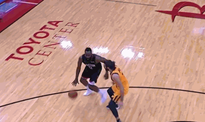
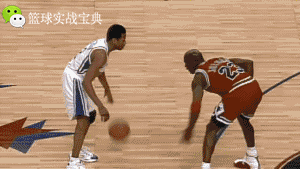

欢迎来到篮球进攻技术介绍网站
对于篮球爱好者来说，掌握篮球进攻的基本动作要领至关重要，不但提高篮球技术水平，增加比赛乐趣，还可以培养团队合作意识，这里我将学习三个重要的篮球进攻技术:
- 急停跳投:掌握篮球急行跳投动作要领及训练方法对于提高球员的得分能力和比赛表现具有重要意义。
- 后撤步投篮：后撤步是一个十分实用的篮球技术动作，无论是后卫还是前锋，甚至是中锋，都可以借此技术动作摆脱对手完成接下来的进攻。 
- 变相突破：风驰电掣的突破让你过人如同过马路! 

对于篮球爱好者来说，掌握篮球进攻的基本动作要领至关重要，不但提高篮球技术水平，增加比赛乐趣，还可以培养团队合作意识，这里我将学习三个重要的篮球进攻技术: